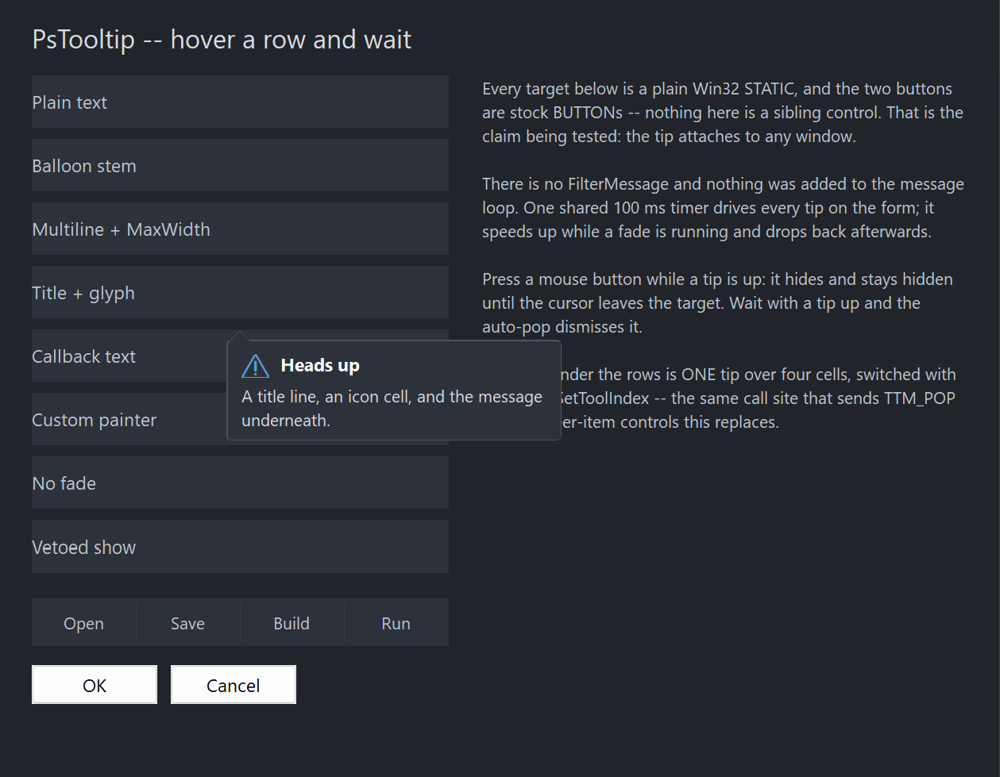

PsTooltip
An owner-drawn tooltip for FreeBASIC/Win32 applications built on the AfxNova framework.
PsTooltip is a WS_POPUP window that appears near the cursor after a dwell, shows a message — optionally wrapped, optionally under a bold title and an icon glyph — fades in, and goes away again. It draws itself, so it matches an owner-drawn application instead of looking like system chrome, and it adds capabilities the comctl32 tooltip does not expose without message-level poking: word wrap with a maximum width, a title band, a balloon stem that points at the target, and a fade you can time or switch off.
You attach one to a control and then largely forget about it. PsTooltip_Create( hCtrl ) creates the tip and attaches it; from that point a shared timer watches the cursor and decides when to show, when to hide, and how to fade. It does not subclass the control it serves and it adds nothing to your message loop.
It is a display element only. It never takes focus, never takes activation, and is hit-test transparent, so clicks pass straight through it to whatever is underneath. Only one tip is ever on screen at a time, whatever number of them you create.
Repository: <https://github.com/PaulSquires/PsTooltip>
What it looks like

Each row in the demo is a plain Win32 STATIC with its own tip configured differently. The tip shown is the "Title + glyph" one: an icon cell, a bold title band, a wrapped message, and a balloon stem pointing back at the cursor. Only one tip is visible at any moment, which is why the other seven are not also in the picture.
Requirements
| File | Purpose |
|---|---|
PsTooltip.bi | Public surface: types, enums, callback typedefs, declarations |
PsTooltip.inc | Implementation |
PsBufferPaint.bi | Flicker-free drawing surface |
PsBufferPaint.inc |
PsBufferPaint must be at version carrying PaintPolygon; TIP_STYLE_BALLOON draws its stem with it.
Include order
Verified against the demo's main.bas. PsTooltip.inc includes PsTooltip.bi itself, so you only name the .inc — but PsBufferPaint.inc must come first:
#include once "windows.bi"
#include once "AfxNova\CWindow.inc"
#include once "AfxNova\AfxStr.inc"
#include once "AfxNova\AfxGdiplus.inc"
using AfxNova
#include once "PsBufferPaint.inc"
#include once "PsTooltip.inc"GDI+ must be running
The frame, the rounded corners and the stem are geometry drawn through GDI+. Initialise it before the first repaint and shut it down after every window is destroyed:
dim as ULONG_PTR gdipToken = AfxGdipInit()
function = frmMain_Show( 0 )
AfxGdipShutdown( gdipToken )Without the bracket the tip draws nothing at all.
Do not name any identifier ok
GDI+ defines Ok = 0 as a Status enum value in namespace AfxNova, and your host says using AfxNova. Any variable, parameter or function of yours called ok becomes a duplicate definition the moment you adopt this control. Use bOK.
There is no pump obligation
PsTooltip has no FilterMessage and needs nothing added to your message loop. If you are coming from PsComboBox, PsTextBox, PsMenuBar, PsNumericUpDown or PsDatePicker you will be looking for one — there isn't one. The dwell detection, click dismissal and fade all run off a shared timer, and the tip never receives keyboard input, so there is nothing for a filter to do:
dim as MSG uMsg
while GetMessage( @uMsg, null, 0, 0 )
TranslateMessage( @uMsg )
DispatchMessage( @uMsg )
wendDestroy the tip with the control it serves
The tip is a top-level window and nothing else will free it. Destroy it where you destroy the control it is attached to:
case WM_NCDESTROY
if IsWindow( pCtrl->hTip ) then DestroyWindow( pCtrl->hTip )Quick start
' One call creates the tip AND attaches it to the control.
dim as HWND hTip = PsTooltip_Create( hMyControl )
PsTooltip_SetFonts( hTip, ghFont(GUIFONT_9), ghFont(GUIFONTBOLD_10), ghFont(GUIFONT_14) )
PsTooltip_SetText( hTip, "A plain tooltip." )That is a complete working tooltip. Everything below is optional.
A wrapped tip with a title, an icon and a stem:
PsTooltip_SetTitle( hTip, "Heads up" )
PsTooltip_SetGlyph( hTip, wchr(&h26A0) ) ' from the glyph font
PsTooltip_SetText( hTip, "A title line, an icon cell, and the message underneath." )
PsTooltip_SetMaxWidth( hTip, 260 )
PsTooltip_SetStyle( hTip, TIP_STYLE_BALLOON )Text supplied on demand instead of stored — the callback runs only when a tip is about to appear, so it can report live state:
PsTooltip_SetTooltipCallback( hTip, @MyTipCallback )
private function MyTipCallback( byval hTooltip as HWND, byval hAttached as HWND, _
byval idx as long ) as DWSTRING
if idx < 0 then return "" ' "" means show no tip at all
dim as DWSTRING wszOut = "Row " & str(idx) & ": " & gRows(idx).Name
return wszOut
end functionFor a control with several hot regions, use one tip for the whole window and tell it which item the cursor is over. Call this from your WM_MOUSEMOVE — a set to the value it already holds costs nothing:
case WM_MOUSEMOVE
dim as long idx = HitTestMyCells( hwnd, x, y )
PsTooltip_SetToolIndex( hTip, idx ) ' -1 when over no cellConcepts
The handle is a real HWND
PsTooltip_Create returns an ordinary window handle. It is not an opaque token — but unlike every other control you will not position it, because the tip decides its own place.
It sizes and places itself
This is the one control here that is not a rectangle you lay out. Its size comes from its content (text, title, glyph, padding, border, stem band) and its position from the cursor or from an anchor rect you pass to PsTooltip_ShowForRect. PsTooltip_GetIdealSize is informational; nothing you do with SetWindowPos will survive the next show.
Placement clamps into the work area of the nearest monitor, and when there is no room below the anchor the tip flips above it rather than being pushed up over it.
Size formula
contentW = max( titleRow, message )
titleRow = glyphCell + (gap if both a glyph and a title) + title
message = measured at nMaxWidth when one is set, natural width otherwise
width = contentW + 2*padX + 2*border
height = titleRowHeight + (titleGap if both bands present) + messageHeight
+ 2*padY + 2*border
+ stemHeight (TIP_STYLE_BALLOON only)SetMaxWidth caps the text wrap, not the window. The width is a max() over the bands, so a title longer than the cap legitimately makes the tip wider — clamping there would clip the title rather than the thing the cap was aimed at.
The glyph cell is declared, not measured
PsTooltip_SetGlyphCell states how much room the icon gets. Nothing is measured, so a glyph that is missing from the font, or a different size from the last one, cannot shift the text underneath it.
It watches the cursor; it does not subclass your control
The tip never sees your control's messages. A shared timer samples the cursor position, works out which attached control it is over, and decides from there. That means:
- Attaching costs your control nothing and changes none of its behaviour.
- The tip cannot see your control's items, which is why per-item tips need
PsTooltip_SetToolIndex. - A control that is hit-test transparent still works. A plain
STATICwithoutSS_NOTIFYreportsHTTRANSPARENT, soWindowFromPointreturns its parent; the tip recognises that case.
Text resolution order
PsTooltip_SetText— if it is non-empty, that is the text.- Otherwise
TIP_TooltipCallbackFunc, if one is set. - Otherwise no tip appears.
There is no fallback to the attached control's caption. If you want the item text as the tip, return it from the callback.
Programmatic and user-driven shows both notify
TIP_ShowCallbackFunc reports a window-state transition, so it fires for PsTooltip_Show as well as for a dwell. Its showing edge is a veto: return FALSE and no tip appears, and no matching hiding edge follows.
Behaviour and limits
- Only one tip is visible at a time, process-wide. Showing one hides any other.
- The stem is always vertical. Every placement mode puts the tip above or below its anchor, never beside it, so the stem leaves the top or the bottom edge. There is no left or right stem.
- A tip that is up does not follow the cursor. Moving within the same control neither moves nor dismisses it; leaving the control, clicking, changing the tool index or the auto-pop delay are what end it.
- A click hides the tip and suppresses it until the cursor leaves the control and comes back.
- A refused show is not retried during the same hover. Returning FALSE from the show callback, or
""from the tooltip callback, suppresses the tip until the cursor leaves — so a host callback is consulted once per hover, not on every timer tick. - The stem is dropped, not shrunk, when it will not fit. A tip narrower than
curvature + stemWidthon both sides draws as a plain rounded rectangle. - The window is region-shaped, so its edge is hard where the region clips. At the default curvature this is not visible; at a large curvature the outermost antialiased pixel of each corner is lost.
- Fonts are borrowed. The control never creates or deletes one. Do not delete a font while a tip using it is alive.
- Single-threaded. UI thread only.
PsTooltip_SetToolIndexis the only way the tip learns about your items. It has no hit-testing of its own.- Timing is per tip, not global. Each instance has its own delays and fade time.
API reference
Creation and attachment
| Function | Behaviour |
|---|---|
PsTooltip_Create( hAttach, CtrlID = 0 ) as HWND | Creates the tip and attaches it to hAttach. The popup's owner is GetAncestor( hAttach, GA_ROOT ). Returns 0 if hAttach is not a window. You own the result and must destroy it. |
PsTooltip_Attach( hTooltip, hAttach ) | Re-points an existing tip at another window. Hides it first. Passing 0 is the same as Detach. |
PsTooltip_Detach( hTooltip ) | Stops watching. The tip stays alive but can never show. |
PsTooltip_GetAttached( hTooltip ) as HWND | The window currently being watched, or 0. |
Content
| Function | Behaviour |
|---|---|
PsTooltip_SetText( hTooltip, wszText ) | The authored message. "" means "ask the callback, then show nothing". Discards the resolved text so the next show re-reads it. |
PsTooltip_GetText( hTooltip ) as DWSTRING | The authored message, not the resolved one. |
PsTooltip_SetTitle( hTooltip, wszTitle ) | Optional bold first line. "" removes the band. |
PsTooltip_GetTitle( hTooltip ) as DWSTRING | |
PsTooltip_SetGlyph( hTooltip, wszGlyph ) | A character drawn from the glyph font in the declared cell. "" removes it. |
PsTooltip_GetGlyph( hTooltip ) as DWSTRING | |
PsTooltip_SetToolIndex( hTooltip, idx ) | Which item the tip describes; -1 for a whole-control tip. A set to the current value is a no-op, so it is safe from WM_MOUSEMOVE. A real change hides any visible tip without a fade and lets the short reshow delay apply. |
PsTooltip_GetToolIndex( hTooltip ) as long |
Appearance
| Function | Behaviour |
|---|---|
PsTooltip_SetColors( hTooltip, pColors ) | Copies the struct by value. Repaints. |
PsTooltip_GetColors( hTooltip, pColors ) | Fills your struct. |
PsTooltip_SetFonts( hTooltip, hText, hTitle = 0, hGlyph = 0 ) | All three are borrowed. hTitle/hGlyph of 0 fall back to hText. |
PsTooltip_SetStyle( hTooltip, nStyle ) | TIP_STYLE_RECT or TIP_STYLE_BALLOON. The balloon adds stemHeight to the tip's height and nothing to its width. |
PsTooltip_GetStyle( hTooltip ) as long | |
PsTooltip_SetMaxWidth( hTooltip, nMaxWidth ) | Caps the text wrap in pixels; 0 disables wrapping, leaving only embedded newlines to break lines. Not a clamp on the window — see the size formula. |
PsTooltip_GetMaxWidth( hTooltip ) as long | |
PsTooltip_SetPadding( hTooltip, nX, nY ) | Negative values leave that axis unchanged. |
PsTooltip_SetCurvature( hTooltip, nCurvature ) | Corner ellipse diameter. Negative is clamped to 0 (square corners). |
PsTooltip_SetBorderWidth( hTooltip, nBorderWidth ) | Negative is clamped to 0 (no frame). Raw pixels — the pen is DPI-scaled when it is drawn, so do not pre-scale it. |
PsTooltip_SetStemSize( hTooltip, nW, nH ) | Negative values leave that axis unchanged. A width below 2 or a height below 1 means no stem is drawn. |
PsTooltip_SetGlyphCell( hTooltip, nCell, nGap ) | The declared icon cell and the gap between it and the title. Negative values leave that field unchanged. The gap is only spent when there is a title beside the glyph. |
Timing
All in milliseconds. Negative values are clamped to 0. Defaults derive from GetDoubleClickTime().
| Function | Behaviour |
|---|---|
PsTooltip_SetInitialDelay( hTooltip, nMs ) | How long the cursor must rest before a tip appears. |
PsTooltip_SetAutoPopDelay( hTooltip, nMs ) | How long a tip stays up. 0 means it never expires. After an auto-pop the tip is suppressed until the cursor leaves. |
PsTooltip_SetReshowDelay( hTooltip, nMs ) | The shorter delay used when a tip was shown and dismissed recently. |
PsTooltip_SetFadeTime( hTooltip, nMs ) | Fade duration, in and out. 0 disables the fade and the tip appears instantly. A fade is interruptible: hiding mid-fade-in continues down from the current opacity. |
PsTooltip_SetMoveTolerance( hTooltip, nPixels ) | How far the cursor may drift and still count as at rest. |
Process-wide defaults
A control in this family creates its tooltip for itself, lazily, and never hands the host the HWND. Styling every tip on a form one at a time is therefore impossible from the outside. These set what PsTooltip_Create applies to each new tip — call them once at startup, before any control is created.
Each is independently armed: a field you never set keeps the value Create derives for it. That is why this is five calls and not one struct — Create derives all three delays from GetDoubleClickTime(), and a zeroed struct would silently replace a machine-appropriate 500 ms with 0 for a host that only wanted to change the colours.
| Function | Behaviour |
|---|---|
PsTooltip_SetDefaultColors( pColors ) | Colours for every tip created afterwards. |
PsTooltip_SetDefaultFonts( hText, hTitle, hGlyph ) | Fonts, borrowed — the host keeps ownership and must outlive every tip. This is the one real hazard in the block, since the promise is being made to controls the host never sees. |
PsTooltip_SetDefaultStyle( nStyle ) | TIP_STYLE_RECT or TIP_STYLE_BALLOON. |
PsTooltip_SetDefaultMaxWidth( nMaxWidth ) | Wrap width, in raw pixels — the caller scales, as everywhere else here. |
PsTooltip_SetDefaultDelays( nInitialMs, nAutoPopMs, nReshowMs ) | A negative argument leaves that delay alone, so "just change the hover time" is one call that cannot disturb the other two. |
PsTooltip_ClearDefaults() | Disarms everything. Later tips are derived again. |
PsTooltip_ApplyDefaults( hTooltip ) | Applies the armed defaults to a tip that already exists. Create calls this itself; a host calls it to re-theme after a theme switch. |
' Once, at startup -- every control's tooltip follows, including ones built lazily later.
dim tipColors as PSTOOLTIP_COLORS
tipColors.BackColor = BGR(250,250,250)
tipColors.ForeColor = BGR( 30, 30, 30)
PsTooltip_SetDefaultColors( @tipColors )
PsTooltip_SetDefaultFonts( ghFontUI )
PsTooltip_SetDefaultMaxWidth( 260 )
PsTooltip_SetDefaultDelays( 400 ) ' hover time only; the other two stay derivedThe system's own tooltip font
PsTooltip_GetSystemFont( byref info as PSTOOLTIP_SYSTEMFONT ) as boolean
Reads SPI_GETNONCLIENTMETRICS's lfStatusFont — the face Windows itself draws tooltips and the status bar in — and reports it. It creates nothing: this control never creates a font (the family rule), so you build the HFONT and you own it, exactly as for PsTooltip_SetFonts.
It lives here for the same reason the delays are derived from GetDoubleClickTime() rather than picked: a tip drawn in a different face and size from every other tip on the machine reads as broken. A host that wants its own font simply does not call this.
Returns FALSE if the system refuses or if what it reports is unusable — no face name, or no derivable point size. On FALSE your struct is not touched, so you fall back to a face of your own rather than to an empty LOGFONT.
| Field | Meaning |
|---|---|
wszFaceName | The typeface, e.g. Segoe UI. |
pointSize | pixelHeight converted against the screen's real LOGPIXELSY. This is the field to build from. |
pixelHeight | abs(lfHeight), exactly as the system reported it. |
lfWeight | The raw LOGFONT weight. Build from this, not from isBold. |
isBold | lfWeight >= FW_BOLD. A convenience, and lossy — see below. |
isItalic | lfItalic <> 0. |
Use
pointSize, notpixelHeight— the difference is not cosmetic.lfHeightcomes back in pixels at the current DPI. Every font-building call that takes a size in points —CWindow.CreateFontamong them — DPI-scales what it is given, so handing it the pixel height asks for a font about 1.75× too large on a 175% display, and looks correct at 100%. That is how the bug ships. Points are DPI-neutral, so pixels → points →CreateFontlands back on the size the system asked for. Measured at 175%:LOGPIXELSY 168,pixelHeight 21,pointSize 9.
Build from
lfWeight, notisBold.FW_BOLDis a threshold. A system face atFW_SEMIBOLDreportsisBold = false, and a host that rebuilt from the boolean alone would redraw it atFW_NORMAL— visibly lighter than the system asked for.
' Take the system's tooltip face, and fall back to your own if it will not answer.
dim sf as PSTOOLTIP_SYSTEMFONT
if PsTooltip_GetSystemFont( sf ) then
ghTipFont = pWindow->CreateFont( sf.wszFaceName, sf.pointSize, sf.lfWeight, sf.isItalic )
ghTipFontBold = pWindow->CreateFont( sf.wszFaceName, sf.pointSize, FW_HEAVY, sf.isItalic )
end if
if ghTipFont = 0 then ghTipFont = pWindow->CreateFont( "Segoe UI", 9, FW_NORMAL )
' The fonts are BORROWED by every tip -- keep them alive, and destroy them yourself.
PsTooltip_SetDefaultFonts( ghTipFont, ghTipFontBold, ghGlyphFont )Showing and hiding
These bypass the dwell. The timer still auto-hides what they put up.
| Function | Behaviour |
|---|---|
PsTooltip_Show( hTooltip ) as boolean | Shows at the current cursor position. Returns FALSE if the text resolves empty, the layout cannot be measured, or a show callback vetoes it. |
PsTooltip_ShowForRect( hTooltip, rcAnchor, nAlign = TIP_ALIGN_BELOW ) as boolean | Shows against a screen rect — how you pin a tip under a specific row or cell instead of following the cursor. |
PsTooltip_Hide( hTooltip ) | Hides, with a fade if one is configured. |
PsTooltip_IsVisible( hTooltip ) as boolean | TRUE while shown, including during a fade out. |
Callback registration
| Function | Behaviour |
|---|---|
PsTooltip_SetPaintCallback( hTooltip, userfunc ) | Replaces the built-in painter entirely. Repaints. |
PsTooltip_SetMessageCallback( hTooltip, userfunc ) | Observes the tip window's messages. |
PsTooltip_SetTooltipCallback( hTooltip, userfunc ) | Supplies text on demand. Discards the resolved text so the next show re-reads it. |
PsTooltip_SetShowCallback( hTooltip, userfunc ) | Notified on show and hide; the showing edge can veto. |
Geometry and introspection
| Function | Behaviour |
|---|---|
PsTooltip_GetIdealSize( hTooltip, byref nW, byref nH ) as sub | The size the tip would be for its current content, stem band included. Forces the pending layout, so it is always current, and resolves the text if it has not been resolved yet — which can run your tooltip callback. |
PsTooltip_GetPartRect( hTooltip, nPart ) as RECT | The rect of a TIP_PART_* region in client coordinates. Empty for a part that is not present (no glyph, no title, no stem). Forces the pending layout. |
Placement and animation helpers
Pure functions — no window, no timer, no state. They are the arithmetic behind placement, exposed so you can reproduce or predict it.
| Function | Behaviour |
|---|---|
PsTooltip_ComputeOrigin( rcAnchor, tipW, tipH, rcWork, nAlign, nCursorOffset ) as POINT | Where a tip of that size goes against that anchor, clamped into rcWork, flipping past the anchor when there is no room. All rects in the same (screen) space. |
PsTooltip_StemOnTop( rcAnchor, ptOrigin, nAlign ) as boolean | TRUE when the resulting tip sits below its anchor, i.e. the stem leaves the top edge. |
PsTooltip_ComputeStem( cxClient, cyClient, bStemOnTop, nStemW, nStemH, nTargetX, nCurvature, pts ) as boolean | Fills pts(0..2) with the stem's vertices in client coordinates, clamped clear of the rounded corners. FALSE — leaving pts untouched — when the client is too narrow, the stem size is degenerate, or pts is null. |
PsTooltip_ComputeAlpha( nElapsed, nFadeMs, bFadingIn ) as long | The fade ramp, 0..255, clamped at both ends. nFadeMs <= 0 gives an instant transition. |
PsTooltip_ShouldShow( bOver, bResting, bHasText, bButtonDown, bSuppressed ) as boolean | The complete decision table for whether a tip may appear. |
Test seam
| Function | Behaviour |
|---|---|
PsTooltip_TickForTest( hTooltip, ptCursor, bOver, bButtonDown, dwNow ) | Drives exactly one tick of the dwell/hide/fade state machine with injected inputs, instead of waiting for the shared timer and reading the real cursor. bOver is stated rather than derived, because a test cannot fake WindowFromPoint. Pass real timestamps offset from one GetTickCount() base — hide bookkeeping stamps itself from the real clock, so a synthetic value near zero would wrap the unsigned arithmetic. |
This is a test seam, not a control channel: calling it from application code fights the shared timer, which is still running and will tick with the real cursor a moment later. It exists because everything that decides when a tip appears — the dwell, the reshow-versus-initial delay choice, the movement tolerance, click suppression, auto-pop, the fade, and the rule that a refused show covers the whole hover — otherwise needs a live message loop and a real mouse to exercise.
Render probes
Both drive the real paint path into an offscreen buffer. They exist so a host that replaces the painter can assert its render is sane.
| Function | Behaviour |
|---|---|
PsTooltip_CountRenderedTones( hTooltip, nPart ) as long | Distinct colours in a part rect, capped at 256. 0 if the part is empty or the surface could not be created. |
PsTooltip_HashRenderedPart( hTooltip, nPart ) as ulong | FNV-1a over a part rect, for asserting that a state change reached the pixels. |
Two cautions if you build assertions on these. A tone floor copied from another control is meaningless — the number depends entirely on what else is inside the part rect, and a frame's antialiased corners survive a render with nothing left in it. And a hash comparison must isolate its variable: if the change under test also alters the tip's size, the part rect moves and the hash changes for that reason instead.
Colors
PSTOOLTIP_COLORS — five fields, which is as many surfaces as a tooltip has. There are no per-state variants: the tip has no hot, pressed or disabled mood, because it is never interactive.
| Field | Paints | Default |
|---|---|---|
BackColor | The body fill, and the stem's interior | BGR(45, 50, 58) |
BorderColor | The frame, and the stem's two sloped edges | BGR(78, 84, 94) |
ForeColor | The message | BGR(212, 217, 226) |
TitleColor | The title line | BGR(255, 255, 255) |
GlyphColor | The icon glyph | BGR(86, 156, 214) |
Paint order in the built-in painter: body fill → frame → stem fill → stem edges → glyph → title → message. The stem is filled after the frame on purpose, with a skirt reaching into the body, so the frame's edge does not draw a line across the stem's base and leave the balloon looking like a triangle stuck onto a closed box.
Callbacks
TIP_TooltipCallbackFunc
type TIP_TooltipCallbackFunc as function( byval hTooltip as HWND, _
byval hAttached as HWND, _
byval idx as long ) as DWSTRINGSupplies the message on demand. Consulted only when the tip has no authored text, and only when a tip is about to appear — not on the timer ticks that decide against one. idx is whatever was last given to PsTooltip_SetToolIndex, or -1. Return "" for no tooltip.
TIP_ShowCallbackFunc
type TIP_ShowCallbackFunc as function( byval hTooltip as HWND, _
byval hAttached as HWND, _
byval idx as long, _
byval bShowing as boolean ) as booleanThe showing edge runs after the text is resolved and the window sized, but before anything reaches the screen — return FALSE to suppress the tip. The hiding edge's result is ignored; a tip already on screen cannot be un-hidden. Both edges fire for programmatic shows and hides. A vetoed show produces no matching hide.
A veto covers the whole hover, not one attempt. The dwell conditions are still true a tick later, so a refused show suppresses the tip until the cursor leaves the attached control — which also means you are consulted once per hover rather than ten times a second. Changing the tool index clears that suppression, so vetoing one cell does not silence the rest of the control.
TIP_PaintCallbackSub
type TIP_PaintCallbackSub as sub( byval p as PSTOOLTIP_PAINTINFO ptr )Draws the whole tip instead of the built-in painter, through p->b. Nothing has been drawn when you are called — the fill and the frame are one rounded shape, so pre-filling the client would put square corners behind it.
Three things to honour:
- Paint the body against
p->rcBody, notp->rcClient.rcClientincludes the stem band. - Draw the message with
p->nTextFlagsand the font you gaveSetFonts. The window was sized by measuring with both; a different font or different flags means the size is wrong and the text clips. - Do not use
PaintBorderRectorPaintRoundBorderRectto draw a frame. They fill unconditionally before stroking, so over existing pixels they erase everything beneath.PaintRoundOutlinestrokes without filling.PsTooltip_CountRenderedTonesexists so you can assert you have not done it.
TIP_MessageCallbackFunc
type TIP_MessageCallbackFunc as function( byval m as PSTOOLTIP_MESSAGEINFO ptr ) as booleanObserves the tip window's messages; return TRUE to suppress the default handling.
Very little arrives here, so do not go looking for something that cannot come. The tip is WS_EX_NOACTIVATE, answers WM_MOUSEACTIVATE with MA_NOACTIVATE and WM_NCHITTEST with HTTRANSPARENT, and is never focused — so it receives no mouse messages at all, no keyboard, and no activation. In practice: WM_PAINT, WM_ERASEBKGND, WM_WINDOWPOSCHANGED and the destroy pair. The user-visible events are on TIP_ShowCallbackFunc.
The result is ignored for WM_DESTROY and WM_NCDESTROY — the control needs both for its own teardown, and suppressing one would leak the state block and leave a dead entry in the internal registry.
PSTOOLTIP_PAINTINFO
| Field | Meaning |
|---|---|
hTooltip | The tip window |
hAttached | The control it is serving |
b | The tip's PsBufferPaint for this repaint (borrowed, not a copy) |
rcClient | The whole window, including the stem band |
rcBody | The rounded frame. Equals rcClient in TIP_STYLE_RECT; in TIP_STYLE_BALLOON it is rcClient less the stem band on whichever edge the stem leaves |
rcGlyph | The declared glyph cell. Empty when there is no glyph |
rcTitle | The title span, out to the content's right edge — not a tight box round the glyphs, so DT_END_ELLIPSIS has room. Empty when there is no title |
rcText | The message span. Empty when there is no message |
ptStem(0..2) | The stem's three vertices in client coordinates: base, apex, base |
bHasStem | FALSE in TIP_STYLE_RECT, and when the tip is too narrow to seat a stem |
bStemOnTop | TRUE when the tip is below its target and the stem points up |
wszText | The resolved message, not the authored field |
wszTitle | |
wszGlyph | |
nStyle | TIP_STYLE_* |
nCurvature | Corner ellipse diameter |
nBorderWidth | Raw pixels; the pen is DPI-scaled when drawn |
nToolIndex | -1 for a whole-control tip |
nTextFlags | The DrawText flags the message was measured with. Paint with these |
PSTOOLTIP_MESSAGEINFO
| Field | Meaning |
|---|---|
hTooltip | The tip window |
hAttached | The control it is serving |
uMsg | |
wParam | |
lParam |
Constants
Style
| Constant | Value | Meaning |
|---|---|---|
TIP_STYLE_RECT | 0 | Rounded rectangle, no stem (default) |
TIP_STYLE_BALLOON | 1 | Rounded rectangle with a stem pointing at the target |
Alignment
| Constant | Value | Meaning |
|---|---|---|
TIP_ALIGN_CURSOR | 0 | Below-right of the cursor, cleared by the cursor's height |
TIP_ALIGN_BELOW | 1 | Below the anchor rect, flipping above when there is no room |
TIP_ALIGN_ABOVE | 2 | Above the anchor rect, flipping below when there is no room |
Parts
| Constant | Value | Region |
|---|---|---|
TIP_PART_CLIENT | 0 | The whole window, stem band included |
TIP_PART_BODY | 1 | The rounded frame, stem band excluded |
TIP_PART_GLYPH | 2 | The declared icon cell |
TIP_PART_TITLE | 3 | The title span |
TIP_PART_TEXT | 4 | The message span |
TIP_PART_STEM | 5 | The stem band only; empty in TIP_STYLE_RECT |
Geometry defaults
Unscaled pixels, DPI-scaled once when the tip is created. Setters afterwards take raw pixels and you scale them yourself.
| Constant | Value |
|---|---|
PSTOOLTIP_DEFAULT_PADX | 10 |
PSTOOLTIP_DEFAULT_PADY | 7 |
PSTOOLTIP_DEFAULT_CURVATURE | 6 (a diameter) |
PSTOOLTIP_DEFAULT_STEMW | 14 |
PSTOOLTIP_DEFAULT_STEMH | 7 |
PSTOOLTIP_DEFAULT_GLYPHCELL | 20 |
PSTOOLTIP_DEFAULT_GLYPHGAP | 8 |
PSTOOLTIP_DEFAULT_TITLEGAP | 4 |
PSTOOLTIP_DEFAULT_MOVETOL | 3 |
The border width defaults to 1 and is not pre-scaled: PaintRoundOutline, PaintLine and PaintPolygon each scale the pen they are handed, so scaling it here as well would double it above 100% DPI.
Timing defaults
| Setting | Default |
|---|---|
| Initial delay | GetDoubleClickTime() |
| Auto-pop delay | GetDoubleClickTime() * 10 |
| Reshow delay | GetDoubleClickTime() \ 5 |
| Fade time | PSTOOLTIP_DEFAULT_FADEMS, 120 ms |
Licence
Mozilla Public License 2.0.
MPL-2.0 is file-level copyleft, chosen deliberately for a drop-in control:
- You may use this in closed-source software, commercial or otherwise. §3.2 permits static linking with no additional conditions.
- If you modify these files, publish those files' changes. The obligation is per-file — your own sources are unaffected however tightly they are combined with these.
- The Exhibit B "Incompatible With Secondary Licenses" notice is not applied, which keeps this GPL-compatible.